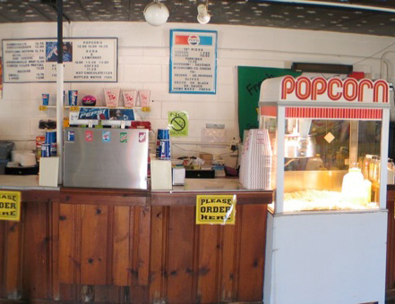

CONCESSIONS
Carry-In Policy
Sky-Vu has a no carry-in policy for all food and beverages. There were over four thousand drive-ins in the United States, now there are only 366, and soon even less because of the expense of Digital Projection as the film era ends. We are working hard to reward patrons who follow the policy by trying to work with those who have not been, in order to continue showing two movies for the price of one. Thank you for your cooperation.

Concession Items
- The Sky-Vu Pizza
- Now a four cheese blend, with world championship cheese from green county
- Nathan's Famous Hot Dog
- All beef and one fourth of a pound
- Our grilled items include
- Footlongs, Chicken, Burgers and Pork
- Popcorn
- Always famous and always fresh
- Nachos and Pretzels
- With cheese!
- Breadsticks
- With the option of cheese or marinara sauces
- Candy
- The best movie theatre kinds
- Soda
- Ice cold Pepsi products
- Sky-Vu Lemonade
- Always fresh and ice cold
- Siberian Chill Slushies
- Flavors in cherry and blueberry